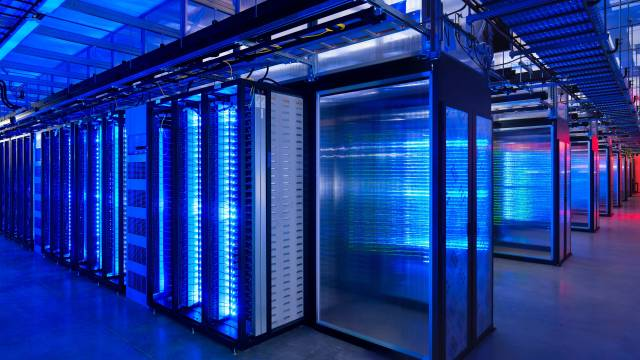
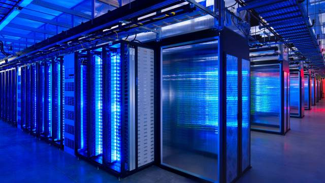
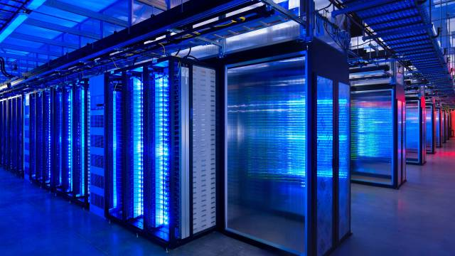
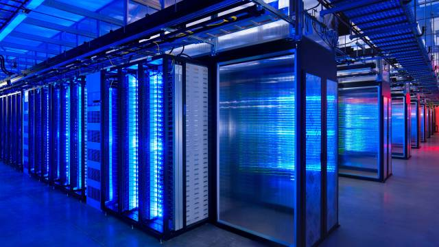

funny thing happened to us on the way to the future. The internet went from being something exotic to being boring utility, like mains electricity or running water – and we never really noticed. So we wound up being totally dependent on a system about which we are terminally incurious. You think I exaggerate about the dependence? Well, just ask Estonia, one of the most internet-dependent countries on the planet, which in 2007 was more or less shut down for two weeks by a sustained attack on its network infrastructure. Or imagine what it would be like if, one day, you suddenly found yourself unable to book flights, transfer funds from your bank account, check bus timetables, send email, search Google, call your family using Skype, buy music from Apple or books from Amazon, buy or sell stuff on eBay, watch clips on YouTube or BBC programs on the iPlayer – or do the 1,001 other things that have become as natural as breathing.